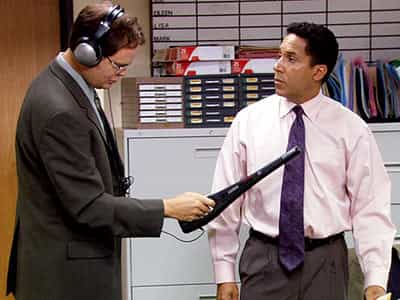

The Office is a wildly popular American TV show that was originally created in Britain. The American version differs from the original—but I have only seen a handful of the British episodes—so I will not comment on that and that is also beyond the scope of this writeup.
For itself, the show opens itself up to much interpretation. The Ribbon Farm has an absolute must-read series of posts analyzing power relations in the modern workplace through the lens of the The Office. However, for my purposes here, I wish to talk about Michael Scott, as he is a perfect example of a narcissist—a person who feels no guilt, only shame.
Michael Scott, for the first eight seasons, is the regional manager of a mid-size paper distributing company. He clearly had a traumatic childhood. While such narcissism is always born out of a childhood not lived, consider a few points that reinforce my perception. First, is his appearance on a TV show for kids. His younger self said his dream was to have 100 kids so nobody can say no to being his friend.
He seems to think that childhood is necessarily limited by the parent’s wishes, which is not healthy. Further, he is admitting he isn’t not getting the positive emotional support at home. Second, consider the taped footage of his mother’s marriage to Jeff. In the clip, when bringing something down the aisle, he screams, “I HATE YOU” and storms off. He is wetting his pants the entire time. Clearly, this situation reminded him of a very traumatic experience that can only be speculated on.
Back on point, Michael Scott displays a great level of delusion about who he is and appropriate behaviors to display in society. He never displays genuine sympathy or empathy, as it is always tied to advancing his personal delusions or to show off to others. He has no self-esteem and has his delusions punctured very easily and slips in narcissistic depression with frightening regularity. He also possesses the ability to turn women into compensatory narcissists and transform himself in a pseudo-codependent. The fact the whole show is supposedly a documentary reinforces the narcissism of the workplace and Michael Scott.
As far as Michael Scott is concerned, he only experiences shame and never guilt. Guilt, properly felt, is a feeling about things you have actually done (to others). Shame, however, is a feeling about who you are, your identity.
For example, let’s say a man forgets to pick a friend up from work and it forces them to miss a date with an attractive woman. The guilt-based person would apologize to the person and feel bad because he hurt a friend. A shame-based person would think “I am such a bad person!” and need public reassurance they aren’t a bad person from the person they harmed.
The guilt-based person would try to own up to their misdeeds and try to rectify the situation with good acts—i.e. buy his friend a case of beer he likes or personally call the woman and convince her that is was his fault—not his friend’s—that she was stood up. The shame-based person will seek avenues to avoid personal culpability, such as downplaying the bad act (she was probably a bitch), blaming them (you know how unreliable I am!) or ignoring the situation (dodging his calls or texts).
Guilt-based people are healthy. People should want to atone for their bad acts with commensurate good acts. Shame-based people are immature psychologically. While every personality disorder has shame-based impulses, narcissism is the one that expressly discloses any ability to feel guilt, only shame.
Shame-based approaches are born out of child-like approaches to criticism or lack of boundaries. Kids subject to intense, withering criticism as a child develop a complex that they are either 100% good or 100% bad. Recall that every child is a born a narcissist, which is why we tend to put the gloves when critiquing a child because we implicitly recognize they take criticism 100% personally as an attack on their identity as a whole.
Further, kids who are never disciplined develop the same complexes. Kids who are unschooled, receive “participation ribbons” or who are born to parents who let them do whatever they want never mature beyond the emotional level of a child. Children need boundaries set by those who love them unconditionally and are intimately based out of that child’s best interest and personality.
Reconsidering Michael Scott, he displays shame-based approaches to life. Recall the season 3 episode in which Michael and Dwight travel to the paper convention with Jim and his new boss. At the end, when Michael’s party fails and he broods in a narcissist depression, Jim visits and calms him down. Michael was jealous of Jim’s rapport with his new boss. Notice at the end when he calms down, he refers to Jim as “Best Friends Forever.” See the black and white approaches to relationships? Jim realizes he is dealing with an emotional child, so he treats him as such.
In fact, the rest of the office—outside Dwight—recognizes this. While his antics are outrageous and often offensive, you can’t really treat him badly because you realize he is—in this heart—an emotional child. When Michael hosts the Dundies in season 2, he is heckled by a group of people. He feels a great amount of shame as they puncture his personal concept of being a comedic genius. He doesn’t really need anybody to validate that, as long as he can perform, he will invent approval in his head.
Let’s consider a few more scenes that flesh out the contours of shame-based behavior. Michael once makes an incredibly dismissive and flippant remark about Dwight crying on New Year’s Eve when it started to snow at midnight while watching one of Dwight’s favorite shows. In private, Michael exhibits a complete lack of feelings about somebody.
I can’t recall the exact scene, but I believe Jim says that is pretty insensitive to mock Dwight for that. Michael backtracks and calls Dwight’s movie “stupid.” See the shame-based approach here? Michael—with no audience—flippantly dismisses a friend’s emotions and when confronted publically about it, he downplays his rejection of Dwight.
Now, making fun of Dwight is one thing, but a guilt-based person would feel a bit bad that a friend had such a emotional reaction to something. Sure, if Dwight was my friend I would razz him about it, but if he’s your friend you care about his emotional state. Rudely ignoring him is not what a good person does.

Quite possibly the best episode to talk about is season 3’s opener, Gay Witch Hunt. In this episode, Michael jokingly refers to Oscar as “faggy.” Toby confronts Michael and tells him Oscar was offended because he is gay. Michael is asked to keep this a secret as Oscar does not want his coworkers to know. A guilt-based person knows that they would feel bad if they disrespected Oscar’s wishes, would apologize to them in private and move on. If Michael had done that, Oscar would have respected Michael. That is not what happens.
Michael does apologize to Oscar, but does it in a self-aggrandizing way and only in semi-private. Oscar accepts Michael’s insincere apology only because he is worried about being outed. Michael doesn’t stop because he knows homosexuality can bring attention into somebody’s life. He has Dwight research gay porn on his computer and it results in a very psychologically unhealthy and embarrassing—for Oscar—office meeting.
As is seen, most people don’t care about allegations of homosexuality. I wouldn’t be surprised if some real-life homosexuals were upset at this (if they notice) because it means most people— today—just don’t care who you have sex with. Pam is interested in hearing about Oscar’s sexuality, but at the moment his biggest issue is Michael. Michael formally outs Oscar, narcissistically thinking Oscar will love the attention, whether positive or negative. See the self-absorption here? If Michael was gay, he would prefer worship for being gay, but would accept hatred if it means avoiding indifference.
Oscar comes out and in the intervening events, shuts Michael down badly, calling him “ignorant, offensive and small.” Michael immediately engages in the shame-based defense mechanism of narcissistic depression. Oscar realizes that Michael had no malicious intentions, just self-absorbed ones. He engages in guilt-based acts right afterward. Oscar softens his tone, proffers a genuine apology and offers Michael a hug. Michael then tries to self-aggrandize with kissing Oscar but he realizes that doesn’t work for him, for obvious reasons.
The takeaway lesson is about the differences between guilt and shame based individuals. Guilt-based people don’t consider failures to speak to their entire identity, while shame-based people do. Shame-based people are emotionally immature and that results from poor parenting of many stripes. Guilt-based people are worried about the effect of their actions on others, shame-based people are worried about their identity, especially as seen by others.
Read More: The Power Of Shame
{kind=link}
{kind=link}
{kind=link}